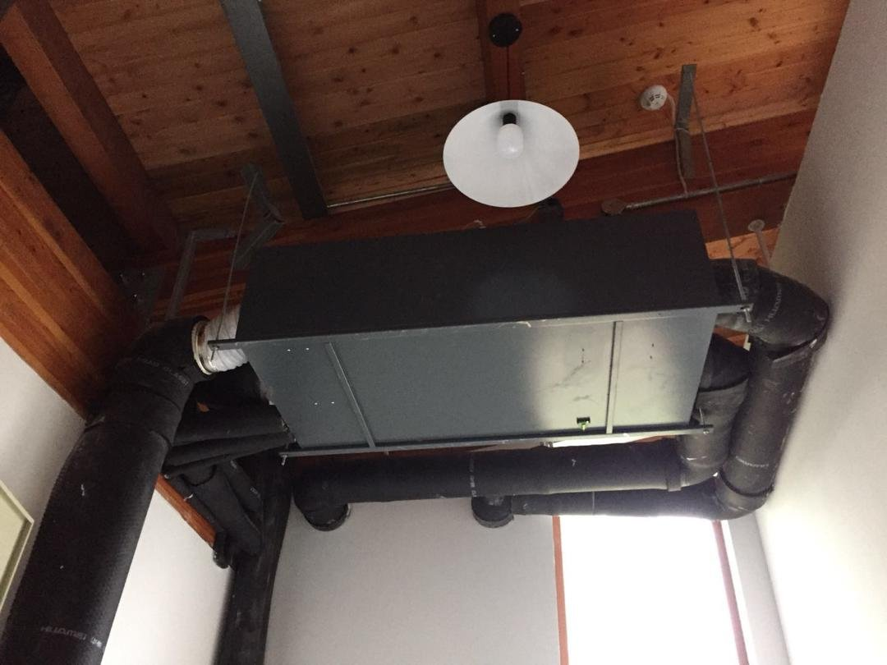
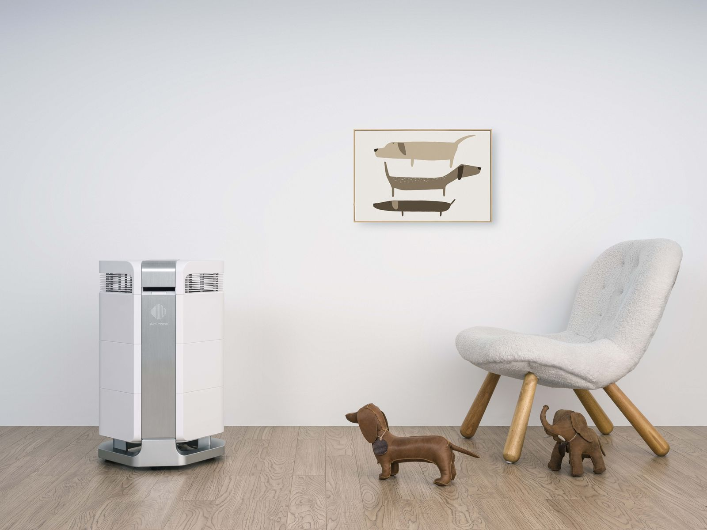

我們的專業產品及服務
由檢測到淨化，一站完成。
針對家居、辦公室、學校及新裝修空間，提供設備、工程與現場服務。

LUKO 管道式除濕淨化
獨特鮮風及內循環空氣過濾二合一，可有效透過鮮風降低室內二氧化碳濃度，並過濾懸浮物。可置地、掛牆及掛天花安裝。
了解更多 →
SmartVent 掛牆式鮮風
AirProce AC 系列抽取室外空氣，過濾後送入室內，減低二氧化碳濃度；亦可內循環除塵、除菌、除味及除甲醛等 VOC。
了解更多 →
AirProce 醫療級空氣淨化機
專業空氣清新機涵蓋內循環至鮮風過濾，應對不同室內空氣污染問題。
了解更多 →
空氣淨化設備租借
提供食環署認可淨化設備租用，適合大面積及新裝修地方，可短用或長租。
了解更多 →
專業除甲醛服務
由甲醛檢測到除甲醛塗層噴塗，一站式全套服務，並提供保持室內空氣質素的建議。
了解更多 →
室內空氣檢測服務
顧問到現場檢測空氣質素，並提供專業建議，有效改善室內環境。
了解更多 →
深層消毒服務
使用加拿大製消毒劑，以霧化形式深層消毒每一處角落，再以光觸媒塗層加強保護。
了解更多 →
STERiZAR 英國消毒產品
獨家 Advanced Barrier Control 技術，消滅細菌及病毒並提供抗菌保護。對環境無害，無刺激性，無酒精，一次使用保護最長可達 30 日。
了解更多 →ESG 綠色能源大廈管理
以數碼孿生及物聯網方案，協助大廈管理監測與優化室內環境及能源表現。
了解更多 →